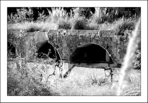

Restos del puente medieval
Sa Porta des Camp
La Porta des Camp es una plaza que proviene de una de las entradas de la Palma antigua, aunque muy próximas se encontrasen dos más: la puerta de Gumara, en la ortaleza del Temple, y otra anterior de época musulmana cuyos restos se encuentran en a iglesia de San Jerónimo, cuyos restos de la puerta y muralla se pueden apreciar desde su patio interior.
n la parte inferior de un lateral de la plaza se pueden contemplar los restos del antiguo puente de la ciudad, el puente de la “Porta des Camp” que hasta no hace mucho se utilizaban de almacén por el complejo de viviendas militares ubicadas junto al puente.